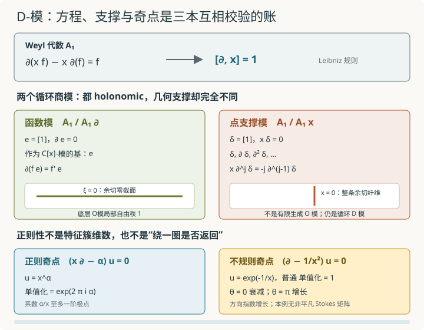

本页目录
基础衔接 22 · D-模：把微分方程、支撑与奇点装进同一个对象
先修：模与商、链复形、联络与单值化、导出范畴与 roofs。本讲固定在特征 \(0\) 的复数域上，先从仿射直线的第一 Weyl 代数算起，再说明哪些结论能推广到光滑簇。目标是分清“向量丛带可积联络”与“一般 D-模”，并用特征簇、正则奇点和不规则奇点回答三种不同的问题。
同一个微分算子，怎样既描述函数，也描述只活在一点上的对象？
1. 乘坐标与求导为什么不能放进交换多项式环
在 \(X=\mathbb A^1_{\mathbb C}\) 上，让 \(x\) 表示乘以坐标，让 \(\partial=\partial_x\) 表示求导。对任意多项式 \(f\)，乘积法则给出
所以作为算子有
第一 Weyl 代数定义为
尖括号表示先取不交换自由代数。关系允许把每个元素唯一整理成
例如
右边多出的 \(3x^2\) 正是 Leibniz 规则，不是排序误差。若错误地令 \(x\partial=\partial x\)，就会把所有导数对系数的作用删掉。
正规形的存在来自反复用 \(\partial x=x\partial+1\) 换序；唯一性可用算子作用检验：若最高阶为 r 的组合恒为零，连续与乘 x 取 r 次交换子会得到 \(r!a_r(x)=0\)，特征0迫使最高系数为零，再向下归纳。
一个左 \(A_1\)-模 \(M\) 同时给出 \(x\) 与 \(\partial\) 在 \(M\) 上的作用，并要求二者满足同一交换子关系。元素 \(m\in M\) 可被多项式乘，也可被求导方向作用；一个循环模常写成
其中 \(A_1P\) 是由算子 \(P\) 生成的左理想。关系 \(P\bar1=0\) 把微分方程保存在模内部。
2. 一般光滑簇上的 \(\mathcal D_X\)
令 \(X\) 是光滑复代数簇。可内在地令 \(F_{-1}\mathcal D_X=0\)，并递归定义 \(F_r\mathcal D_X\) 为满足 \([P,f]\in F_{r-1}\mathcal D_X\) 对所有局部函数 f 成立的复线性算子 P；取这些层之并就是 \(\mathcal D_X\)。在本讲的光滑特征0条件下，微分算子层 \(\mathcal D_X\) 由函数 \(f\in\mathcal O_X\) 与向量场 \(\xi\in\mathcal T_X\) 局部生成，基本关系是
在一张光滑坐标图 \((x_1,\ldots,x_n)\) 上，它看起来像由
生成的 Weyl 代数层，其中
“光滑、特征 \(0\)”不是装饰条件。它使切向量场表现良好，并让微分算子按阶数的伴随分次恢复余切空间上的交换函数环。奇异底空间或正特征中的微分算子会出现额外现象，本讲的公式不能原样搬过去。
全讲使用左 D-模。左右 D-模可以借助典范线丛互换，但公式会带符号和扭曲；不声明侧别就直接混用商模，是常见错误。
3. 第一个商模：\(A_1/A_1\partial\) 就是普通多项式函数
令
关系 \(\partial e=0\) 意味着每个正规形中含正次 \(\partial\) 的项作用到 \(e\) 后消失。因此
作为 \(\mathbb C[x]\)-模自由秩一。作用为
因为
所以 \(M_{\rm fun}\) 不是“满足所有导数为零的常数空间”。它是整个函数模，只是循环生成元 \(e\) 被 \(\partial\) 杀死；对 \(xe\) 再作用 \(\partial\) 仍得到 \(e\)。
一般地，一个向量丛 \(E\) 带代数联络
时，可以令向量场按 \(\nabla_\xi\) 作用。要让所有向量场关系真的给出 \(\mathcal D_X\)-作用，必须有零曲率
这就是可积或平坦联络。在光滑特征 \(0\) 情形，底层为 \(\mathcal O_X\)-凝聚的左 \(\mathcal D_X\)-模与带可积联络的向量丛对应；这里的 \(\mathcal O_X\)-凝聚条件至关重要。
4. 第二个商模：\(A_1/A_1x\) 只支撑在原点，却不是有限维
现在令
关系是 \(x\delta=0\)。用 \(\partial x-x\partial=1\) 反复换序，可得
因此在商模中
作为复向量空间，\(M_\delta\) 有基
它不是有限维，也不是 \(\mathbb C[x]\)-有限生成模：乘 \(x\) 只能把导数阶数向下降，无法从有限多个基向量生成任意高阶 \(\partial^j\delta\)。但把 \(x\) 局部化为可逆元后，\(x\delta=0\) 会推出 \(\delta=0\)，所以这个模的几何支撑只在 \(x=0\)。
这正是“所有 D-模都是向量丛带联络”的反例。\(M_\delta\) 是循环的、D-凝聚的，却有点支撑，底层不是局部自由 \(\mathcal O_X\)-模。把它类比为 delta 分布及其导数有助于直觉，但代数定义就是上面的左商模，不依赖先建立分布论。
还有一个有用的警告：方程 \(xu=0\) 在普通全纯函数中只有零解，但 \(M_\delta\) 本身绝非零对象。若只用普通函数解空间探测所有 D-模，会漏掉点支撑信息；完整的 Riemann-Hilbert 对应需要导出解函子和构造性层，而不是“把每个方程写成若干函数”。

D-模同时看见方程与支撑。两个商模都 holonomic，却分别沿整个底空间传播和集中在一点；正则性则是另一层关于奇点渐近行为的信息。
5. 特征簇：把最高阶方向投影到余切空间
按微分阶数过滤 \(\mathcal D_X\)：函数是 \(0\) 阶，向量场是 \(1\) 阶。交换子会降低一次阶数，因此伴随分次重新交换，并有
这里的凝聚 D-模要求底层O-拟凝聚，并局部由有限多个元素作为D-模生成。对这样的 M，好过滤是下有界、穷尽的O-凝聚子模过滤 \(F_jM\)，满足 \(F_i\mathcal D_X\cdot F_jM\subseteq F_{i+j}M\)，且分次模局部有限生成于 \(\operatorname{gr}\mathcal D_X\)。它把无穷多个导数按阶数组织起来；不是截掉高阶后改变原模。将分次模视为余切空间上的凝聚层，令
虽然好过滤不唯一，所得特征簇的闭子集与选择无关。它记录微分方程在哪些余切方向失去椭圆性；这里只讨论集合支撑，不计算特征循环的重数。
在 \(\mathbb A^1\) 上用余切坐标 \(\xi\) 表示 \(\partial\) 的主符号。于是
即余切丛的零截面；而
即原点上方的整个余切纤维。可以直接检查：函数模取 \(F_j=0\)（j<0）、\(F_j=\mathbb C[x]e\)（j≥0），正阶导数在分次上作用为0，故分次模是 \(\mathbb C[x,\xi]/(\xi)\)。点模取 \(F_j=\operatorname{span}_{\mathbb C}(\delta,\ldots,\partial^j\delta)\)；乘x降阶，所以在分次上作用为0，而ξ升阶，故分次模是 \(\mathbb C[x,\xi]/(x)\)。这实际给出上述两张特征簇，而不只是从图猜支撑。两者维数都为 \(1=\dim X\)。
对光滑不可约 \(n\) 维 \(X\) 上的非零凝聚 D-模，Bernstein 不等式给出
若取到最小可能维数
就称 \(M\) 为 holonomic D-模。holonomic 表示方程系统在特征方向意义下“尽可能有限”，不表示底层向量空间有限维，也不表示底层 \(\mathcal O_X\)-模一定是向量丛。\(M_\delta\) 同时反驳这两个误解。
6. \(x\partial-\alpha\)：正则奇点、规范移位与单值化
在 \(X=\mathbb G_m=\operatorname{Spec}\mathbb C[x,x^{-1}]\) 上考虑循环 D-模
一支 D-线性解把生成元送到局部函数 \(u\)，关系要求
在选定 \(\operatorname{Log}x\) 的小区域中
绕 \(x=0\) 正向一周，\(\operatorname{Log}x\) 增加 \(2\pi i\)，因此解的单值化是
这里算的是解函子 \(\operatorname{Hom}_{\mathcal D}(M_\alpha,\mathcal O)\) 的单值化。模自身满足 \(\partial e=(\alpha/x)e\)；它的水平截面 \(fe\) 却满足 \(f^{\prime}+(\alpha/x)f=0\)，所以是 \(x^{-\alpha}e\)，单值化为 \(e^{-2\pi i\alpha}\)。两者互为对偶，不能把解空间与模自身的水平截面混用。
把未知函数写成 \(u=x^m v\)，其中 \(m\in\mathbb Z\)，则
所以整数规范变换把 \(\alpha\) 改为 \(\alpha-m\)，而
保持单值化。\(\alpha=3/2\) 与 \(1/2\) 在 \(\mathbb G_m\) 上由这种规范相连；这不自动说明它们在已经指定延拓的 \(\mathbb A^1\) 上是同一个 D-模，因为 \(x^m\) 在原点未必可逆。
把方程看成原点附近的亚纯联络时，系数 \(\alpha/x\) 至多有一阶极点，属于正则奇点。正则性控制的是解在奇点附近的增长类型；它与 holonomic 不是同一个形容词。具体选择延拓 \(\widetilde M_\alpha=A_1/A_1(x\partial-\alpha)\)（不是宣称所有延拓相同）。其算子主符号是
因主符号环是整环，\(\sigma(QP)=\sigma(Q)\sigma(P)\)，这个主左理想的分次理想正是 \((x\xi)\)。故此延拓的特征簇等于
即零截面与原点余切纤维之并，仍是一维，因而 holonomic。特征簇看见原点是奇异位置，却没有仅凭这张集合告诉我们奇点是否正则。
7. 不规则奇点：单值化甚至可能什么也没发现
在穿孔圆盘上考虑
积分给出
它绕原点一周仍回到自身，单值化是 \(1\)。但若写
则
沿 \(\theta=0\) 接近原点时它快速衰减，沿 \(\theta=\pi\) 时却以 \(e^{1/r}\) 快速增长；\(\theta=\pi/2,3\pi/2\) 是增长类型改变的方向。系数 \(1/x^2\) 是二阶极点，这个秩一模型在 \(0\) 有不规则奇点，它的指数增长类型不能由普通单值化矩阵完整记录。这个秩一精确指数例没有非平凡的 Stokes 矩阵；高秩系统中不同扇区的渐近基还可能通过非平凡 Stokes 矩阵连接，不能把本例的方向增长直接当成已经算出了那些矩阵。
因此三张账必须分开：
| 性质 | 回答的问题 | 本讲例子 |
|---|---|---|
| holonomic | 特征簇是否达到最小维数 | \(M_{\rm fun},M_\delta,M_\alpha\) 都是 |
| regular singular | 奇点附近是否只有受控的正则增长 | \(x\partial-\alpha\) 在 \(0\) 正则 |
| monodromy | 沿闭路解析延拓怎样变换解 | \(e^{2\pi i\alpha}\)；\(e^{-1/x}\) 的普通单值化为 \(1\) |
“单值化平凡”不推出正则，“holonomic”也不推出所有奇点正则。正则 holonomic D-模与构造性拓扑数据之间有经典 Riemann-Hilbert 对应；不规则情形需要加入 Stokes 数据的增强版本。本讲只展示这些条件为什么不可删，没有证明对应。
8. 操作同一个代数关系，再比较不同奇点
第一项实验按有限多项式的精确系数实际执行 x 与 ∂ 的两种顺序。它仅显示无限维模中的有限多个元素，没有在最高次数把乘法截断成一个错误的有限维 Weyl 表示。特征簇图是复余切簇的实坐标切片；零截面和纤维是整条线，图窗外继续延伸。
第二项实验把“绕一圈”和“沿一条射线接近零”分开。图画 log|u|，避免指数过大掩盖另一条方向；调小半径时，正则幂函数随 log r 变化，不规则指数随 1/r 变化。滑块中的 α 取实数，不能据此概括所有复参数或所有高秩系统。
无脚本默认先取 \(j=3\)：
交换子可在 \(x^3\) 上核对：
再取 \(\alpha=1/2,w=1\)，得到单值化 \(e^{\pi i}=-1\)。正则模型的特征方程是 \(x\xi=0\)；不规则模型 \(e^{-1/x}\) 的普通单值化虽为 \(1\)，沿正实轴衰减、沿负实轴增长。实验必须同时报告这两件事，不能用“转一圈回来了”误判正则性。
9. 两道迁移题
题一。 考虑
求局部函数解，计算其在 \(\mathbb A^1\) 上的特征簇并判断是否 holonomic。把直线紧化到 \(\mathbb P^1\) 后，\(\infty\) 是正则还是不规则奇点？
查看解、主符号与无穷远渐近
方程是 \(u'=xu\)，所以
乘任意常数。算子的一阶主符号是 \(\xi\)，故
是零截面，维数 \(1\)；因此 \(M\) holonomic。
令 \(z=1/x\)。因为 \(\partial_x=-z^2\partial_z\)，方程变成
解为 \(e^{1/(2z^2)}\)。系数有三阶极点并产生方向相关的指数增长，所以 \(\infty\) 是不规则奇点。仿射特征簇为零截面并没有自动证明紧化边界处正则。
题二。 比较 \(M_{\rm fun}=A_1/A_1\partial\) 与 \(M_\delta=A_1/A_1x\)。分别算 \(x\partial^2\) 对循环生成元的作用，并说明为什么两者都是 holonomic，却只有前者来自 \(\mathbb A^1\) 上的向量丛带联络。
查看交换子、支撑与底层 O 模
在 \(M_{\rm fun}\) 中 \(\partial e=0\)，所以
在 \(M_\delta\) 中
前者作为 \(\mathbb C[x]\)-模是自由秩一，带通常微分作用；其特征簇为 \(V(\xi)\)。后者的基为所有 \(\partial^j\delta\)，不是 \(\mathbb C[x]\)-有限生成模，并只支撑在原点；其特征簇为 \(V(x)\)。两张特征簇都一维，所以两者都 holonomic；holonomic 条件没有把点支撑模块强迫成向量丛。
速查与资料
\(\mathcal D_X\) 同时编码函数与向量场，局部满足 \([\partial_i,x_j]=\delta_{ij}\)。只有底层 \(\mathcal O_X\)-凝聚的左 D-模才对应向量丛带可积联络；\(A_1/A_1x\) 是点支撑反例。特征簇来自好过滤，holonomic 指其维数等于 \(\dim X\)。\(x\partial-\alpha\) 是正则奇点模型，单值化为 \(e^{2\pi i\alpha}\)；\(e^{-1/x}\) 单值化平凡却不规则。
定义、好过滤、特征簇、holonomic 与 Riemann-Hilbert 边界可核对 Mustață：D-modules and singularities；Weyl 代数入口见 Coutinho：A primer of algebraic D-modules，联络的代数定义见 Stacks Project：Connections。本讲没有构造六函子、特征循环、V-filtration、b-function、perverse sheaf 或不规则 Riemann-Hilbert 对应；在模叠上定义 D-模还需要下一讲的几何语言。核查：2026-09-09。